4.2 Likelihood ratio tests#
The only question type that appears in every exam (9/9). You get two PDFs and must turn "ratio of likelihoods ≷ threshold" into a simple rule like "$x > 1.92$" or "$\sum|x_n| < \gamma'$", then often compute $P_{FA}$ and $P_D$. Same steps every time; the only trap is the direction of the inequality. This page shows where the ratio comes from, then does the algebra slowly.
Before this page
- Hypotheses, the four outcomes, \(P_{FA}\), \(P_D\), thresholds, ROC (4.1)
- PDFs, the Gaussian, \(Q(x)\), independence (0.6)
- \(\ln\), \(e^x\) and their rules (Toolbox); integrals as areas (0.4)
If you read only one thing: the likelihood ratio says "how many times better does \(\mathcal H_1\) explain this data than \(\mathcal H_0\) does?". Whatever the PDFs look like, the algebra simply turns that sentence into "compare one number computed from the data with a threshold".
1 · The idea, from zero#
1.1 Which story explains the data better?#
You have an observation \(x\) and two stories, \(\mathcal H_0\) and \(\mathcal H_1\). Each story assigns a PDF value to \(x\): \(p(x\mid\mathcal H_0)\) and \(p(x\mid\mathcal H_1)\) — "how plausible is it to see this \(x\) if that story were true". The likelihood ratio is their ratio:
Read: "if \(L>\lambda\) decide \(\mathcal H_1\), otherwise decide \(\mathcal H_0\)" (\(\lambda\) = the threshold of the test).
Tiny example with numbers
\(\mathcal H_0\): \(x\sim\mathcal N(0,1)\), \(\mathcal H_1\): \(x\sim\mathcal N(2,1)\) (the example of 4.1). You observe \(x=1.5\).
- \(p(1.5\mid\mathcal H_0)=\frac1{\sqrt{2\pi}}e^{-1.5^2/2}=0.3989\cdot e^{-1.125}=0.3989\cdot0.3247=0.1295\)
- \(p(1.5\mid\mathcal H_1)=\frac1{\sqrt{2\pi}}e^{-(1.5-2)^2/2}=0.3989\cdot e^{-0.125}=0.3989\cdot0.8825=0.3521\)
- \(L=\dfrac{0.3521}{0.1295}=2.72\): the signal story explains \(x=1.5\) about 2.7 times better. With \(\lambda=1\) we decide \(\mathcal H_1\).
1.2 What does the threshold \(\lambda\) mean?#
- \(\lambda=1\): "pick whichever story explains \(x\) better". Geometrically it is where the two PDFs cross.
- \(\lambda>1\): you demand \(\mathcal H_1\) to be much better before saying yes: fewer false alarms, fewer detections.
- Where \(\lambda\) comes from: from a target \(P_{FA}\) (Neyman–Pearson, 4.1) or from priors and costs (Bayes, 4.3: for equal costs \(\lambda=P_0/P_1\)).
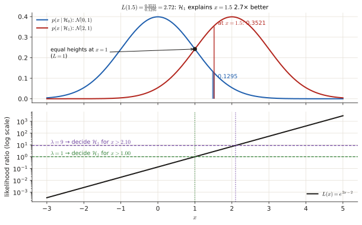
1.3 Many samples: products become sums#
With \(N\) independent and identically distributed (i.i.d.) samples \(x_0,\dots,x_{N-1}\), the joint PDF of independent things is the product of the individual PDFs (0.6):
Products of exponentials turn into exponentials of sums (\(e^ae^b=e^{a+b}\)), and taking \(\ln\) turns the whole product into a sum. That is why test statistics look like \(\sum x_n\), \(\sum x_n^2\), \(\sum\lvert x_n\rvert\).
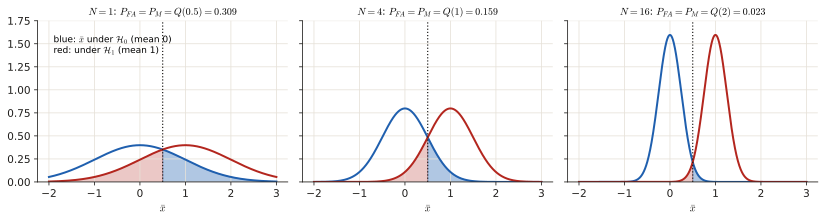
2 · The recipe, with one example done slowly#
Recipe: from LRT to a simple rule
- Write \(L(\mathbf x)\). For \(N\) i.i.d. samples each PDF is a product over \(n\).
- Cancel everything common (the factor \(x\) in Rayleigh PDFs, \(\frac{1}{\sqrt{2\pi}}\), …).
- Take \(\ln\) of both sides (the log is increasing, so the inequality direction is unchanged).
- Move everything that does not depend on the data to the right-hand side. That is the new threshold \(\gamma'\).
- If you multiply or divide by a negative number, the inequality flips, and so do the \(\mathcal H_0\)/\(\mathcal H_1\) labels.
- Sanity check: the hypothesis whose PDF is larger in a region should be the one you decide there.
Worked example: a constant \(A>0\) buried in noise
\(\mathcal H_0\): \(x_n\sim\mathcal N(0,\sigma^2)\). \(\mathcal H_1\): \(x_n\sim\mathcal N(A,\sigma^2)\), \(n=0..N-1\), i.i.d.
- \(L=\dfrac{\prod\frac1{\sqrt{2\pi\sigma^2}}e^{-(x_n-A)^2/2\sigma^2}}{\prod\frac1{\sqrt{2\pi\sigma^2}}e^{-x_n^2/2\sigma^2}}\).
- The factors \(\frac1{\sqrt{2\pi\sigma^2}}\) cancel. Exponents add: \(L=\exp\!\Big[-\frac1{2\sigma^2}\sum\big((x_n-A)^2-x_n^2\big)\Big]\).
- Expand \((x_n-A)^2-x_n^2=-2Ax_n+A^2\): \(\ \ln L=\dfrac{A}{\sigma^2}\sum x_n-\dfrac{NA^2}{2\sigma^2}\).
- \(\ln L>\ln\lambda\iff\dfrac A{\sigma^2}\sum x_n>\ln\lambda+\dfrac{NA^2}{2\sigma^2}\).
- \(A>0\), so dividing by \(\frac A{\sigma^2}>0\) does not flip: decide \(\mathcal H_1\) when \(\ \bar x=\frac1N\sum x_n>\dfrac{\sigma^2\ln\lambda}{NA}+\dfrac A2\).
- Check: for \(\lambda=1\) the threshold is \(A/2\), halfway between the two means. ✓
Typical results (memorise the shape, not the algebra):
| \(\mathcal H_0\) vs \(\mathcal H_1\) | Test statistic | Decide \(\mathcal H_1\) when |
|---|---|---|
| Gaussian, mean 0 vs mean \(A>0\) | sample mean \(\bar x\) | \(\bar x\) large |
| Gaussian, variance \(\sigma_0^2\) vs \(\sigma_1^2>\sigma_0^2\) | energy \(\sum x_n^2\) (or \(\lvert x\rvert\)) | energy large |
| Laplacian, \(\mathcal H_1\) narrower | \(\sum\lvert x_n\rvert\) | \(\sum\lvert x_n\rvert\) small |
| Exponential, \(\lambda_1>\lambda_0\) | \(x\) | \(x\) small |
| Rayleigh, \(\sigma_1>\sigma_0\) | \(x\) | \(x\) large |
| Known signal \(s_n\) in white Gaussian noise | \(\sum x_ns_n\) (matched filter) | correlation large |
(Rule of thumb: the hypothesis with the wider PDF wins in the tails, the narrower one wins near the centre.)
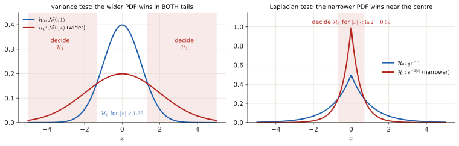
2.1 From the rule to \(P_{FA}\) and \(P_D\)#
The error probabilities are integrals of the PDFs over the "decide \(\mathcal H_1\)" region (4.1 §1.3). Useful tools:
- Gaussians: standardise and use \(Q(z)\) (or the erf table).
- Exponential \(\lambda e^{-\lambda x}\): right tail \(P(X>a)=e^{-\lambda a}\), so \(\int_a^b\lambda e^{-\lambda x}dx=e^{-\lambda a}-e^{-\lambda b}\) and \(P(X\lt a)=1-e^{-\lambda a}\).
- Rayleigh \(\frac x{\sigma^2}e^{-x^2/2\sigma^2}\): right tail \(P(X>a)=e^{-a^2/2\sigma^2}\) (substitute \(u=\frac{x^2}{2\sigma^2}\), \(du=\frac x{\sigma^2}dx\), the integral becomes \(\int e^{-u}du\)).
- Given \(P_{FA}=\alpha\), find the threshold: invert the \(P_{FA}\) formula (e.g. \(1-e^{-\gamma'}=\alpha\Rightarrow\gamma'=-\ln(1-\alpha)\)), then plug it into \(P_D\).
Exam questions#
June 2026 resit · 4b#
Resit Q4, June 2026 · 4b · 1 p
A wireless sensor detects the presence of a transmitting device by measuring the received signal envelope \(X\) (in mV). Under normal operating conditions the envelope follows a Rayleigh distribution due to multipath fading. Two hypotheses are proposed:
- Under \(H_0\) (no device present), \(X \sim \text{Rayleigh}(\sigma_0)\).
- Under \(H_1\) (device present), \(X \sim \text{Rayleigh}(\sigma_1)\),
with \(\sigma_1 > \sigma_0 > 0\), both known.
The Rayleigh pdf with scale parameter \(\sigma\) is \(p(x \mid \sigma) = \frac{x}{\sigma^2} \exp\left(-\frac{x^2}{2\sigma^2}\right)\), \(x \geq 0\).
- Construct the likelihood-ratio test for a threshold \(\eta\).
- Discuss how the separation between \(\sigma_0\) and \(\sigma_1\) affects detection performance.
Solution
What is being asked? (1) Turn "\(L(x)>\eta\)" into a rule on \(x\). (2) Explain in words (and with \(P_{FA},P_D\)) why a bigger gap between \(\sigma_0\) and \(\sigma_1\) helps.
Symbols in this question
| Symbol | Meaning |
|---|---|
| \(X\) | the measured envelope (always \(\ge0\)) |
| \(\sigma_0<\sigma_1\) | Rayleigh scale: a larger \(\sigma\) means a bigger typical envelope |
| \(\eta\) | the threshold on the likelihood ratio (called \(\lambda\) elsewhere) |
Step 1 — write \(L(x)\) and cancel. The factor \(x\) appears in both PDFs and cancels:
Step 2 — take \(\ln\) and isolate \(x^2\). \(\ln\frac{\sigma_0^2}{\sigma_1^2}+\frac{x^2}2\cdot\frac{\sigma_1^2-\sigma_0^2}{\sigma_0^2\sigma_1^2}\gtrless\ln\eta\) (using \(\frac1{\sigma_0^2}-\frac1{\sigma_1^2}=\frac{\sigma_1^2-\sigma_0^2}{\sigma_0^2\sigma_1^2}\)). Since \(\sigma_1>\sigma_0\) this factor is positive, so nothing flips when we divide by it:
Step 3 — square root. \(x\ge0\), so taking the root is safe (and keeps the direction):
In words: a strong envelope means a device is there.
Step 4 — performance. Rayleigh right tail: \(P(X>\gamma)=e^{-\gamma^2/2\sigma^2}\) (section 2.1). So
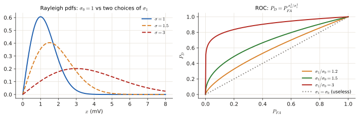
Example: \(\sigma_1^2=4\sigma_0^2\) gives \(P_D=P_{FA}^{1/4}\); at \(P_{FA}=0.01\) that is \(P_D=0.01^{0.25}=0.316\). With \(\sigma_1^2=9\sigma_0^2\), \(P_D=0.01^{1/9}=0.60\). A bigger gap → smaller exponent → higher \(P_D\) at the same \(P_{FA}\).
Interpretation. The larger \(\sigma_1/\sigma_0\), the less the two PDFs overlap, so the ROC moves towards the top-left corner. When \(\sigma_1\to\sigma_0\) the PDFs coincide, the exponent \(\to1\), \(P_D\to P_{FA}\) and the detector is no better than guessing.
Answer
Decide \(H_1\) if \(x>\gamma=\sqrt{\frac{2\sigma_0^2\sigma_1^2}{\sigma_1^2-\sigma_0^2}\ln\!\big(\eta\,\sigma_1^2/\sigma_0^2\big)}\). Bigger separation → less overlap → higher \(P_D\) at the same \(P_{FA}\) (\(P_D=P_{FA}^{\sigma_0^2/\sigma_1^2}\)).
April 2025 exam · 4a#
Final exam Q3, 13 April 2025 · 4a · 0.5 p
You are conducting a likelihood ratio test using a single datapoint \(x\), \(0 < x < 1\) whereby \(p(x) = k_1 \theta x^{k_2 \theta - 1}\). Two hypothesis can be distinguished
If \(\lambda = 0.2\), \(k_1 = 1\), and \(k_2 = 2\), what is the value for \(x\) for which \(\mathcal{H}_1\) should be accepted?
Solution
What is being asked? Find the values of \(x\) for which \(L(x)>\lambda=0.2\), i.e. the "accept \(\mathcal H_1\)" region.
Symbols in this question
| Symbol | Meaning |
|---|---|
| \(\theta\) | the parameter of the PDF: 3 under \(\mathcal H_0\), 6 under \(\mathcal H_1\) |
| \(k_1=1,\ k_2=2\) | constants; so \(p(x)=\theta x^{2\theta-1}\) |
Step 1 — plug in. \(p(x\mid\mathcal H_0)=3x^{2\cdot3-1}=3x^{5}\) and \(p(x\mid\mathcal H_1)=6x^{2\cdot6-1}=6x^{11}\). (Both integrate to \(\tfrac12\) on \((0,1)\), which is why they are not perfect PDFs; the factor cancels in the ratio.)
Step 2 — the ratio. \(L(x)=\dfrac{6x^{11}}{3x^{5}}=2x^{6}\) (divide the numbers, subtract the exponents).
Step 3 — compare with \(\lambda\). \(2x^6\ge0.2\iff x^6\ge0.1\iff x\ge0.1^{1/6}\). Numerically: \(\ln0.1=-2.3026\), divided by 6: \(-0.3838\), and \(e^{-0.3838}=0.681\).
Answer
Accept \(\mathcal H_1\) for \(0.68\lesssim x<1\) (\(x\ge0.1^{1/6}\))
April 2024 exam · 4b#
Final exam Q3, April 2024 · 4b · 1.5 p
Consider the hypothesis
where \(y > 0\).
- Sketch the likelihoods.
- For a threshold \(\gamma = 1\), indicate the probability of false alarm and the probability of missed detection.
- For a threshold \(\gamma = 1\), calculate the probability of detection and the probability of false alarm. Use the expression \(Q(x) = \int_x^{\infty} \frac{1}{\sqrt{2\pi}} e^{-\frac{u^2}{2}} du\) for the \(Q\) function. There is no need to provide exact numerical values.
Solution
What is being asked? Here "threshold \(\gamma=1\)" is the threshold on the likelihood ratio (\(L>1\) means "decide the PDF that is higher"), not a value of \(y\). So: (1) draw both PDFs; (2) find the \(y\) where they cross (that is where \(L=1\)) and shade \(P_{FA}\) and \(P_M\); (3) compute \(P_{FA}\) and \(P_D\) as tail areas.
Step 1 — sketch. \(\mathcal H_0\) starts at \(\frac1{\sqrt{2\pi}}=0.40\) at \(y=0\) and drops fast (Gaussian tail). \(\mathcal H_1\) starts at \(0.25\) and decays slowly (exponential tail). So \(\mathcal H_0\) is higher near 0 and \(\mathcal H_1\) is higher for large \(y\).
Step 2 — where they cross (\(L=1\)):
(Take \(\ln\), then multiply by 2. \(\ln4=1.3863\) and \(\ln\sqrt{2\pi}=\frac12\ln2\pi=0.9189\).) Solve the quadratic \(y^2-y-0.935=0\):
Decide \(\mathcal H_1\) for \(y>1.588\).
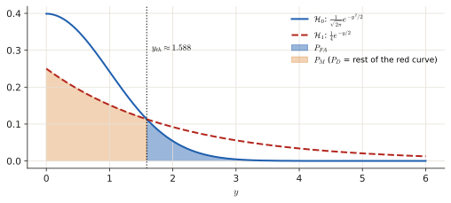
Step 3 — what to shade. \(P_{FA}\) = area under the \(\mathcal H_0\) curve to the right of 1.588 (blue). \(P_M\) = area under the \(\mathcal H_1\) curve to the left of 1.588 (orange).
Step 4 — the values, with the densities exactly as printed:
Normalisation
On \(y>0\) each printed density integrates to ½ (they are the two-sided densities of Jan 2022 4b cut in half). If you normalise them (×2) you get \(P_{FA}=2Q(1.588)\approx0.11\) and \(P_D=e^{-0.794}\approx0.45\), the Jan 2022 numbers. The threshold is the same either way. Write the expressions in \(Q\) and say which convention you used.
Answer
Decide \(\mathcal H_1\) if \(y>y_{th}\approx1.59\); \(P_{FA}=Q(y_{th})\), \(P_D=\frac12e^{-y_{th}/2}\) (≈ 0.056 and 0.23 as printed; ×2 if normalised).
Q1 2023 resit · 4c, 4d#
Resit Q1 2023 · 4c, 4d (shown in the Part 4 review lecture)
Consider a binary hypothesis testing problem where we use the single observations \(x\) to discriminate between two hypotheses \(\mathcal{H}_0\) and \(\mathcal{H}_1\). Under the two hypotheses, the single observation \(x\) admits the following distributions:
4c In the figure below, the probability density function for \(x\) under both hypotheses is illustrated. For a likelihood ratio test \(L(x) = \frac{p(x|\mathcal{H}_1)}{p(x|\mathcal{H}_0)} \underset{\mathcal{H}_0}{\overset{\mathcal{H}_1}{\gtrless}} \lambda\) with threshold \(\lambda = 1\), indicate the probability of false alarm and the probability of miss.
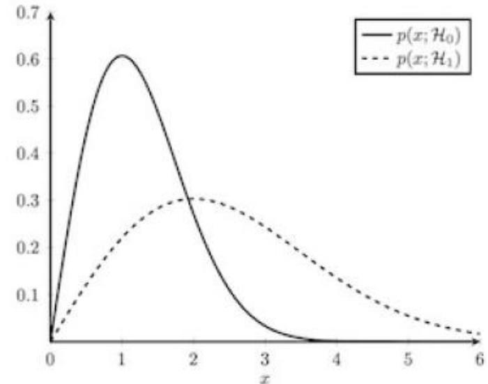
4d Assuming a single observation, show that the likelihood ratio can be written as a function of the observation \(x\), i.e., \(x \underset{\mathcal{H}_0}{\overset{\mathcal{H}_1}{\gtrless}} \lambda'\). Find an expression for \(\lambda'\) and calculate its value for \(\lambda = 1\).
Solution
What is being asked? 4d: reduce \(L(x)>\lambda\) to \(x>\lambda'\) and compute \(\lambda'\) for \(\lambda=1\). 4c: shade \(P_{FA}\) and \(P_M\) for that threshold.
Reading the plot. Solid = \(\mathcal H_0\) (Rayleigh with \(\sigma=1\), peak at 1). Dashed = \(\mathcal H_1\) (Rayleigh with \(\sigma=2\), peak at 2, wider and lower). \(\lambda=1\) means the boundary is where the curves cross.
Step 1 — 4d: the ratio (the factor \(x\) cancels):
(\(-\frac{x^2}8+\frac{x^2}2=\frac{-x^2+4x^2}8=\frac{3x^2}8\).)
Step 2 — isolate \(x\). \(\frac14e^{3x^2/8}>\lambda\iff e^{3x^2/8}>4\lambda\iff\frac{3x^2}8>\ln(4\lambda)\iff x>\lambda'=\sqrt{\tfrac83\ln(4\lambda)}\) (positive numbers, no flip; \(x>0\) so the root is safe).
Step 3 — number. \(\lambda=1\): \(\lambda'=\sqrt{\frac83\ln4}=\sqrt{2.667\cdot1.386}=\sqrt{3.697}\approx1.92\). (Valid for \(\lambda>\frac14\); for smaller \(\lambda\), \(\ln(4\lambda)<0\) and you always decide \(\mathcal H_1\).)
Step 4 — 4c: shading. Right of 1.92 the dashed curve is on top → decide \(\mathcal H_1\) there.
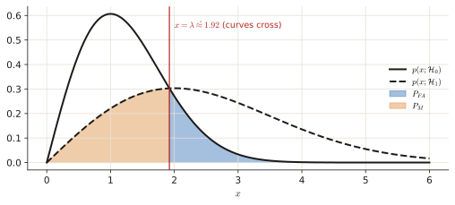
- \(P_{FA}\) = area under the solid curve for \(x>1.92\) (value: Rayleigh tail \(e^{-1.92^2/2}=e^{-1.85}\approx0.16\)).
- \(P_M\) = area under the dashed curve for \(x<1.92\) (value: \(1-e^{-1.92^2/(2\cdot4)}=1-e^{-0.46}\approx0.37\)).
Answer
\(\lambda'=\sqrt{\frac83\ln(4\lambda)}\approx1.92\) for \(\lambda=1\); \(P_{FA}\) = \(\mathcal H_0\) tail right of 1.92, \(P_M\) = \(\mathcal H_1\) area left of 1.92.
November 2022 exam · 4c, 4d, 4e#
Final exam Q1, 7 November 2022 · 4c (0.5 p), 4d (0.25 p), 4e (0.5 p)
Consider a binary hypothesis testing problem where we use the observations vector \(\mathbf{x}\) of length \(N\) to decide between two hypotheses \(\mathcal{H}_0\) and \(\mathcal{H}_1\). Under the two hypotheses, a single observation \(x\) admits a zero mean Laplacian distribution, but with different variances which are given as
Assume that each observation \(x_n\) of the observation vector \(\mathbf{x}\) is independent and identically distributed.
4c Show that the likelihood ratio test for deciding between these two hypotheses takes the form \(\sum_{n=0}^{N-1} |x_n| \underset{\mathcal{H}_1}{\overset{\mathcal{H}_0}{\gtrless}} \gamma'.\) Additionally, determine the threshold \(\gamma'\). Hint: Pay special attention to the inequality in the decision criteria, i.e., when you decide on one of the two hypotheses.
4d For the case \(N = 1\), the hypothesis test becomes \(|x_n| \underset{\mathcal{H}_1}{\overset{\mathcal{H}_0}{\gtrless}} \gamma'\), which can be simplified by considering a new random variable \(Y = |X|\) with distributions \(\mathcal{H}_0: p(y; \mathcal{H}_0) = e^{-y}\), \(\mathcal{H}_1: p(y; \mathcal{H}_1) = 2e^{-2y}\). The likelihood ratio test is then given by \(y \underset{\mathcal{H}_1}{\overset{\mathcal{H}_0}{\gtrless}} \gamma'\). The distribution of \(y\) under the two hypotheses is illustrated below. Indicate the probability of false alarm \(P_{FA}\) and the probability of miss \(P_M\) for a threshold \(\gamma' = 1\) in the plot. Hint: Pay special attention to the inequality in the decision criteria, i.e., when you decide on one of the two hypotheses.

4e For a \(P_{FA} = 0.1\) calculate the threshold \(\gamma'\). For the threshold you have found, calculate the probability of detection \(P_D\).
Solution
What is being asked? 4c: derive the sum-of-absolute-values test and its threshold, paying attention to the flip. 4d: shade \(P_{FA}\) and \(P_M\) (watch which side is "decide \(\mathcal H_1\)"). 4e: choose the threshold that gives \(P_{FA}=0.1\) and compute \(P_D\).
Symbols in this question
| Symbol | Meaning |
|---|---|
| \(N\) | number of samples; \(x_n\) independent |
| \(\gamma\) | threshold on the likelihood ratio |
| \(\gamma'\) | the new threshold on the statistic \(\sum\lvert x_n\rvert\) |
| \(y=\lvert x\rvert\) | the absolute value of one sample (an exponential random variable) |
Step 1 — 4c: ratio for one sample. \(\dfrac{e^{-2|x|}}{\frac12e^{-|x|}}\). Dividing by \(\frac12\) = multiplying by 2, and \(\frac{e^a}{e^b}=e^{a-b}\), so it is \(2e^{-2|x|+|x|}=2e^{-|x|}\) (because \(-2|x|+|x|=-|x|\)).
Step 2 — ratio for \(N\) i.i.d. samples (1.3). Independent: the joint PDF is the product of the single-sample PDFs, so the ratio is the product of \(N\) copies of \(2e^{-|x_n|}\):
The \(N\) factors of 2 give \(2^N\); \(e^ae^b=e^{a+b}\) merges the exponentials into one with exponent \(-(|x_0|+\dots+|x_{N-1}|)=-\sum_n|x_n|\). Check, \(N=3\), \(\mathbf x=(0.5,-1,0.5)\): \(\sum|x_n|=2\), \(L=2^3e^{-2}=8\cdot0.1353\approx1.083\).
Step 3 — take \(\ln\) (increasing, so the direction stays): \(\ln(2^N)=N\ln2\) and \(\ln e^u=u\) give \(N\ln2-\sum_n|x_n|\ \gtrless\ \ln\gamma\). Subtract \(N\ln2\) (no flip): \(-\sum_n|x_n|\gtrless\ln\gamma-N\ln2\).
Step 4 — multiply by \(-1\). Negative number, so the inequality flips and the labels swap (\(-3>-5\) becomes \(3<5\)). \(\mathcal H_1\) was on top of "\(>\)", now it sits under "\(<\)":
Reading the notation: the hypothesis under the sign is chosen when the left side is smaller, the one on top when it is bigger. So "decide \(\mathcal H_1\) if \(\sum|x_n|<\gamma'\)".
So \(\mathcal H_1\) (the narrower Laplacian) is chosen when the samples are small (sum below \(\gamma'\)). That agrees with intuition: \(e^{-2|x|}\) is concentrated near 0.
Step 5 — 4d: which side is "decide \(\mathcal H_1\)"? Small \(y\): \(y<\gamma'=1\).
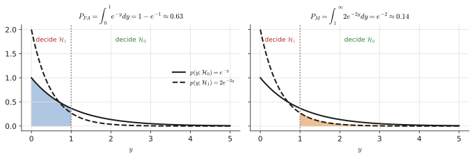
\(P_{FA}\) = area under the solid \(\mathcal H_0\) curve for \(0\le y<1\). \(P_M\) = area under the dashed \(\mathcal H_1\) curve for \(y>1\). (Not "the tail on the right" as usual: the hint is about exactly this.)
Step 6 — 4e: threshold for \(P_{FA}=0.1\). Decide \(\mathcal H_1\) for \(y<\gamma'\), so \(P_{FA}=\int_0^{\gamma'}e^{-y}dy=1-e^{-\gamma'}=0.1\Rightarrow e^{-\gamma'}=0.9\Rightarrow\gamma'=-\ln0.9\approx0.105\).
Step 7 — \(P_D\) with the same threshold and the \(\mathcal H_1\) PDF: \(P_D=\int_0^{\gamma'}2e^{-2y}dy=1-e^{-2\gamma'}=1-(e^{-\gamma'})^2=1-0.9^2=1-0.81=0.19\).
Answer
4c:
i.e. decide \(\mathcal H_1\) when \(\sum|x_n|<\gamma'\). 4d: shaded as above. 4e: \(\gamma'=-\ln0.9\approx0.105\), \(P_D=0.19\).
January 2022 resit · 4b, 4c#
Resit, 24 January 2022 · 4b (0.7 p), 4c (1 p)
Consider hypotheses:
4b Provide a sketch for the two PDFs and indicate the probability of false alarm and missed detection for a likelihood test with \(\gamma = 1\).
4c Calculate the probability of detection and false alarm for \(\gamma = 1\). Below you can find a table with selected values of the Q-function which is defined as \(Q(x) = \int_x^{\infty} \frac{1}{\sqrt{2\pi}} e^{-\frac{u^2}{2}} du\).
| x | 1.51 | 1.52 | 1.53 | 1.54 | 1.55 | 1.56 | 1.57 | 1.58 | 1.59 |
|---|---|---|---|---|---|---|---|---|---|
| Q(x) | 0.0655 | 0.0643 | 0.0630 | 0.0618 | 0.0606 | 0.0594 | 0.0582 | 0.0571 | 0.0559 |
Solution
What is being asked? The same problem as April 2024 4b, but now \(y\) can be negative (two-sided PDFs), so there are two tails. \(\gamma=1\) is again the threshold on the ratio.
Step 1 — the crossing points. Same algebra, with \(\lvert y\rvert\): \(\frac{\sqrt{2\pi}}{4}e^{(y^2-|y|)/2}=1\iff y^2-|y|=2\ln4-\ln2\pi=0.935\iff|y|=1.588.\) Decide \(\mathcal H_1\) for \(|y|>1.588\) (both tails: the Laplacian has heavier tails than the Gaussian).
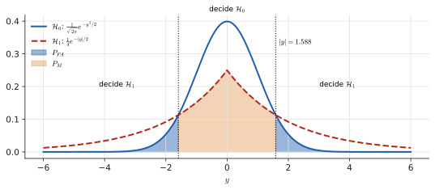
Step 2 — shading. \(P_{FA}\) = the two Gaussian tails beyond \(\pm1.588\) (blue). \(P_M\) = the Laplacian area between \(-1.588\) and \(1.588\) (orange).
Step 3 — 4c: detection. By symmetry double the right tail: \(P_D=2\int_{1.588}^\infty\frac14e^{-y/2}dy=2\cdot\frac14\cdot2e^{-1.588/2}=e^{-0.794}=0.452\).
Step 4 — false alarm. \(P_{FA}=2Q(1.588)\). From the table, \(Q(1.59)=0.0559\) (and \(Q(1.58)=0.0571\)), so \(P_{FA}\approx2(0.0559)=0.112\).
Answer
Decide \(\mathcal H_1\) if \(|y|>1.588\); \(P_D\approx0.45\), \(P_{FA}\approx0.11\).
Practice exam 2021 · 4b#
Practice exam, 28 October 2021 · 4b · 1 p
Consider a binary hypothesis testing problem where the observed data \(x[0], x[1], \dots, x[n]\) consists of independent identically distributed samples and follows the PDF's
where \(\sigma_1 > \sigma_0\). Derive the log-likelihood ratio test that uses the observed data.
Solution
What is being asked? The recipe of section 2 for two zero-mean Gaussians that differ only in variance. The result is the classic energy detector.
Step 1 — the ratio. Each sample: \(\frac1{\sqrt{2\pi\sigma_i^2}}e^{-x_n^2/2\sigma_i^2}\). For \(N\) samples (product, the exponents add):
Step 2 — \(\ln\). \(\ln\frac{(\sigma_1^2)^{-N/2}}{(\sigma_0^2)^{-N/2}}=-\frac N2\ln\frac{\sigma_1^2}{\sigma_0^2}=N\ln\frac{\sigma_0}{\sigma_1}\), and the exponents give \(\frac12\big(\frac1{\sigma_0^2}-\frac1{\sigma_1^2}\big)\sum x^2[n]\):
Step 3 — isolate the data. Move the constant to the right: \(\ln\gamma-N\ln\frac{\sigma_0}{\sigma_1}=\ln\gamma+N\ln\frac{\sigma_1}{\sigma_0}\). The bracket \(\frac1{\sigma_0^2}-\frac1{\sigma_1^2}=\frac{\sigma_1^2-\sigma_0^2}{\sigma_0^2\sigma_1^2}\) is positive (\(\sigma_1>\sigma_0\)), so dividing by it does not flip:
An energy detector: a bigger variance shows up as more energy (3.1: energy = squares added).
Answer
\(\ln L=N\ln\frac{\sigma_0}{\sigma_1}+\frac12\big(\frac1{\sigma_0^2}-\frac1{\sigma_1^2}\big)\sum x^2[n]\gtrless\ln\gamma\), i.e. decide \(\mathcal H_1\) when \(\sum x^2[n]\) exceeds the threshold above.
January 2020 retake · Exercise 5#
Retake exam, 20 January 2020 · Exercise 5 · 0.75 + 0.5 + 1.25 p
Consider the binary hypothesis testing problem where the observed data \(x[0], x[1], \dots, x[n]\) consists of independent identically distributed samples and follows the exponential PDFs
where \(x \geq 0\), \(\lambda_1 > \lambda_0 > 0\).
- (a) For a single sample of observed data, roughly plot the PDFs for \(\lambda_1 = 2\) and \(\lambda_0 = 0.1\). Calculate and mark the threshold \(x_{th}\) for likelihood ratio \(\mathcal{L}(x_{th}) = 1\). Write down the equations for calculating the probability of detection \(P_d\) and the probability of false alarm \(P_{fa}\) in terms of \(\lambda_0\), \(\lambda_1\) and \(x_{th}\). [0.75 pt.] Hint: The cumulative distribution function for the exponential PDF is \(P(x < x_{th}) = 1 - e^{-\lambda x}\). Design your binary hypothesis test such that \(P_d > P_{fa}\).
- (b) Given \(\lambda_0 = 0.1\), find \(\lambda_1\) that gives \(P_d = 0.9\) when \(P_{fa} = 0.1\). [0.5 pt.]
- © Plot the ROC curve with \(P_d\) on the vertical axis and \(P_{fa}\) on the horizontal axis for the \(\lambda_1\) value calculated in (b), by calculating the \(P_d\) for \(P_{fa} = 0.5\) and \(P_{fa} = 0.9\) as reference points for the ROC curve. Roughly sketch (without calculating \(P_d\) and \(P_{fa}\)) two more curves describing the cases where \(\lambda_1\) is increased and \(\lambda_1\) is decreased. Hint: Even if you are not able to calculate the \(\lambda_1\) in (b), roughly plot the ROC curves as described above to get partial grading. [1.25 pt.]
Solution
What is being asked? (a) Find where the two exponential PDFs cross, decide on which side to say \(\mathcal H_1\), write \(P_d\) and \(P_{fa}\). (b) Find the rate \(\lambda_1\) that makes (\(P_{fa}=0.1\), \(P_d=0.9\)) true. © Sketch ROC curves.
Symbols in this question
| Symbol | Meaning |
|---|---|
| \(\lambda_0,\lambda_1\) | rate of the exponential PDF under each hypothesis (large rate = PDF squeezed towards 0) |
| \(x_{th}\) | threshold on \(x\) |
| CDF \(1-e^{-\lambda x}\) | \(P(X\lt x)\) for an exponential |
Step 1 — (a): the crossing. \(L(x)=\dfrac{\lambda_1e^{-\lambda_1x}}{\lambda_0e^{-\lambda_0x}}=\dfrac{\lambda_1}{\lambda_0}e^{-(\lambda_1-\lambda_0)x}=20e^{-1.9x}\). Set \(L=1\): \(e^{-1.9x}=\frac1{20}\Rightarrow x_{th}=\dfrac{\ln20}{1.9}=\dfrac{2.996}{1.9}\approx1.58\).
Step 2 — which side? \(L(x)\) decreases with \(x\) (because \(\lambda_1>\lambda_0\)): near 0 the steep \(\mathcal H_1\) PDF is higher. So decide \(\mathcal H_1\) for \(x\lt x_{th}\) (this is what makes \(P_d>P_{fa}\), as the hint asks).
Step 3 — probabilities (CDF, since the region is \(x\lt x_{th}\)):
(Numbers for \(\lambda_1=2\): \(P_d=1-e^{-3.15}=0.957\), \(P_{fa}=1-e^{-0.158}=0.146\).)
Step 4 — (b). \(P_{fa}=0.1\): \(1-e^{-0.1x_{th}}=0.1\Rightarrow x_{th}=\frac{-\ln0.9}{0.1}=1.054\). Then \(P_d=0.9\): \(1-e^{-\lambda_1\cdot1.054}=0.9\Rightarrow\lambda_1=\frac{-\ln0.1}{1.054}=\frac{2.303}{1.054}\approx2.19\).
Step 5 — ©: the ROC in one formula. \(e^{-\lambda_1x}=\big(e^{-\lambda_0x}\big)^{\lambda_1/\lambda_0}=(1-P_{fa})^{\lambda_1/\lambda_0}\), so
\(P_{fa}=0.5\): \(P_d=1-0.5^{21.9}\approx1\) (threshold \(x_{th}=6.93\)). \(P_{fa}=0.9\): \(P_d\approx1\) (\(x_{th}=23\)). Together with \((0.1,0.9)\) the curve rises almost vertically and then stays at 1.
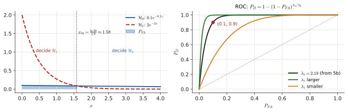
Step 6 — the two extra curves. Increasing \(\lambda_1\) makes the PDFs more different → the ROC moves closer to the top-left corner. Decreasing it towards \(\lambda_0\) → closer to the diagonal.
Answer
(a) \(x_{th}=\frac{\ln20}{1.9}\approx1.58\), decide \(\mathcal H_1\) for \(x\lt x_{th}\), \(P_d=1-e^{-\lambda_1x_{th}}\), \(P_{fa}=1-e^{-\lambda_0x_{th}}\). (b) \(\lambda_1\approx2.19\). © \(P_d\approx1\) at both points; curves as in the figure.
November 2019 exam · Exercise 4#
Written exam, 4 November 2019 · Exercise 4 · 0.5 + 0.5 + 1 p
Consider the binary hypothesis testing problem where the observed data \(x[0], x[1], \dots, x[n]\) consists of independent identically distributed samples and follows the PDF's
where \(\sigma_1 > \sigma_0\).
- (a) For a single sample of observed data, roughly plot the PDF's and mark the threshold for likelihood ratio \(\mathcal{L}(x[n]) = 1\). Write down the equations for calculating the probability of detection \(P_d\) and the probability of false alarm \(P_{fa}\) in terms of \(p(x[n]; \mathcal{H}_1)\) and \(p(x[n]; \mathcal{H}_0)\) (i.e. you don't need to write the Gaussian PDF explicitly). [0.5 pt.]
- (b) Calculate the probability of detection and the probability of false alarm when \(\sigma_1 = 3\sigma_0\) and the likelihood ratio is chosen such that the threshold is \(x_{th} = \sigma_1\). For the calculations, use the values given below for \(x \sim \mathcal{N}(0, \sigma^2)\): \(Pr(0 \leq x \leq \sigma) = 0.341\), \(Pr(\sigma \leq x \leq 2\sigma) = 0.136\), \(Pr(2\sigma \leq x \leq 3\sigma) = 0.021\) [0.5 pt.]
- © Derive the log-likelihood ratio test that uses the observed data \(x[0], x[1], \dots, x[n]\), starting from the likelihood ratio formulation \(\mathcal{L}(x) = \frac{p(\mathbf{x}; \mathcal{H}_1)}{p(\mathbf{x}; \mathcal{H}_0)} > \gamma\) [1 pt.]
Solution
What is being asked? Two zero-mean Gaussians with different widths. (a) picture + formulas, (b) numbers from the "68–95–99.7"-style table, © the energy detector (identical to Oct 2021 4b).
Step 1 — (a): picture. Both centred at 0; \(\mathcal H_1\) is wider and lower. They cross at \(\pm x_{th}\) where \(L=1\): \(\frac{\sigma_0}{\sigma_1}e^{\frac{x^2}{2}(\frac1{\sigma_0^2}-\frac1{\sigma_1^2})}=1\Rightarrow x_{th}^2=\frac{2\sigma_0^2\sigma_1^2}{\sigma_1^2-\sigma_0^2}\ln\frac{\sigma_1}{\sigma_0}\). The wider PDF wins in the tails, so decide \(\mathcal H_1\) for \(\lvert x\rvert>x_{th}\) (both tails). By symmetry:
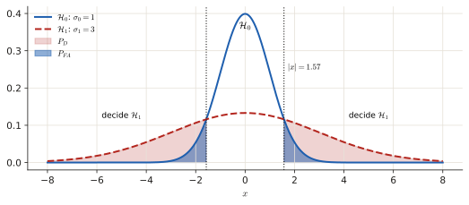
Step 2 — (b): \(P_d\). Threshold \(x_{th}=\sigma_1\): under \(\mathcal H_1\) it is one standard deviation. \(P(x>\sigma_1)=0.5-P(0\le x\le\sigma_1)=0.5-0.341=0.159\). Two tails: \(P_d=2\cdot0.159=0.318\).
Step 3 — \(P_{fa}\). Under \(\mathcal H_0\) the same threshold is \(x_{th}=\sigma_1=3\sigma_0\): three standard deviations. \(P(x>3\sigma_0)=0.5-0.341-0.136-0.021=0.002\) (half the area, minus the three slices up to \(3\sigma_0\)). Two tails: \(P_{fa}=2\cdot0.002=0.004\).
Step 4 — ©. Identical to Oct 2021 4b: \(\ln\mathcal L(\mathbf x)=N\ln\frac{\sigma_0}{\sigma_1}-\frac{\sum x^2[n]}{2\sigma_1^2}+\frac{\sum x^2[n]}{2\sigma_0^2}>\ln\gamma\).
Answer
(a) decide \(\mathcal H_1\) for \(|x|>x_{th}\), formulas above. (b) \(P_d=0.318\), \(P_{fa}=0.004\). © the energy detector above.
January 2019 retake · Exercise 3#
Written exam, 21 January 2019 · Exercise 3 · 1.25 + 1.25 p
Consider a binary hypothesis testing problem, where a decision on the underlying hypotheses is to be made based on the realizations of the random variable \(x\).
(a) Formulate the likelihood ratio test, probability of false alarm and probability of detection. Represent the distributions for the random variable under the hypotheses \(\mathcal{H}_0\) and \(\mathcal{H}_1\) as \(p(\mathbf{x}; \mathcal{H}_0)\) and \(p(\mathbf{x}; \mathcal{H}_1)\) respectively. [1.25 pt.]
(b) Consider the two hypotheses are \(p(x) \sim \mathcal{N}(0, 1)\) under \(\mathcal{H}_0\) and \(\mathcal{N}(\mu_1, \sigma_1)\) under \(\mathcal{H}_1\). Given the cumulative distribution function is calculated as \(p(x \leq X; \mu, \sigma) = \frac{1}{2} \left[ 1 + \operatorname{erf} \left( \frac{X - \mu}{\sigma\sqrt{2}} \right) \right]\) and using the table for the function \(\operatorname{erf} \left( \frac{X}{\sqrt{2}} \right)\) given below (\(X=-3\dots3\): \(-0.997, -0.954, -0.683, 0, 0.683, 0.954, 0.997\)), calculate the probability of detection \(P_d\) and the probability of false alarm \(P_{fa}\) for the threshold values \(X\), means \(\mu_1\) and standard deviations \(\sigma_1\) listed in the table: \((X,\mu_1,\sigma_1)=(1,1,1),\ (1,3,1),\ (1,3,2),\ (2,3,1)\). [1.25 pt.]
Solution
What is being asked? (a) The definitions of section 1 and 4.1 written with general PDFs. (b) The same computation as Practice exam 2021 4a, now with a different \(\sigma_1\) as well.
Step 1 — (a).
(The old key writes the ratio upside down; use the standard form above.)
Step 2 — (b): right tails. Decide \(\mathcal H_1\) for \(x>X\), so each probability is \(1-\text{CDF}=\frac12\big[1-\operatorname{erf}\big(\frac{X-\mu}{\sigma\sqrt2}\big)\big]\). Standardise first: \(z=(X-\mu)/\sigma\), then read the erf table at \(z\).
- \(P_{fa}\): \(\mathcal H_0\) is \(\mathcal N(0,1)\), so \(z=X\).
- \(P_d\): \(z=(X-\mu_1)/\sigma_1\).
Row 3, for example, \((X,\mu_1,\sigma_1)=(1,3,2)\): \(z=\frac{1-3}2=-1\); erf \(=-0.683\); \(P_d=\frac12(1+0.683)=0.8415\).
| \(X\) | \(\mu_1\) | \(\sigma_1\) | \(z\) for \(P_d\) | \(P_d\) | \(P_{fa}\) (\(z=X\)) |
|---|---|---|---|---|---|
| 1 | 1 | 1 | 0 | 0.5 | 0.159 |
| 1 | 3 | 1 | −2 | 0.977 | 0.159 |
| 1 | 3 | 2 | −1 | 0.841 | 0.159 |
| 2 | 3 | 1 | −1 | 0.841 | 0.023 |
Answer
Table above.